The role of Green Bonds in institutional investors’ portfolios
This thesis investigates whether Green Bonds can be effectively integrated into institutional investors’ portfolios without undermining financial efficiency. Using a comparative framework based on European ETF data, the analysis contrasts Green Bond portfolios with conventional corporate bond portfolios. Performance and resilience are assessed through risk-adjusted and downside risk measures, including the Sharpe Ratio, Value at Risk (VaR), and Conditional Value at Risk (CVaR). The results highlight how sustainability objectives can coexist with traditional portfolio management principles, while also revealing the role of market conditions and diversification in shaping outcomes
1) Project overview
This project assesses whether sustainable fixed-income instruments—specifically Green Bonds—change the traditional
principles of portfolio management for institutional investors. The core question is practical:
can sustainability objectives be integrated without compromising financial efficiency?
To answer it, I compare two ETF-based portfolios built to be as “mirror-like” as possible: a Green Bond portfolio (GB)
versus a conventional Corporate Bond portfolio (CB). Performance is evaluated using one classic risk-adjusted metric
(Sharpe Ratio) and two downside / tail-risk metrics (Value at Risk and Conditional Value at Risk).
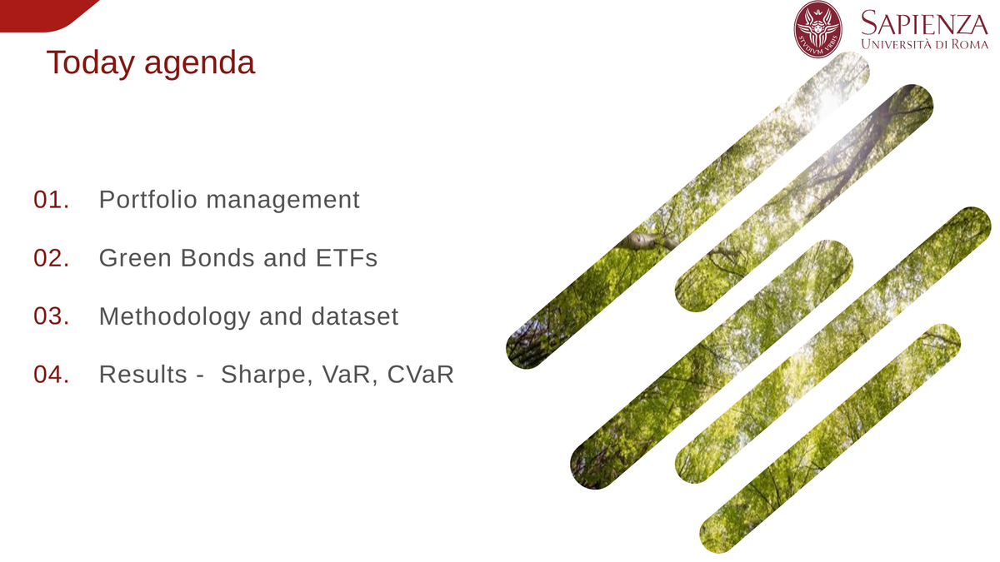
2) Why institutional investors?
Institutional investors play a central role in modern capital markets and in the real economy. Pension funds, insurance companies, asset managers, and sovereign wealth funds collectively manage a substantial share of global assets under management, and their portfolio allocation decisions have a direct impact on market stability, liquidity, and long-term investment trends. Because of their long investment horizons and fiduciary responsibilities, institutional investors are particularly exposed to structural risks such as climate change and regulatory transitions. Their capital allocation choices influence not only financial returns, but also the availability of funding for long-term projects related to energy transition, infrastructure, and sustainable development. For this reason, the analysis in this thesis is framed around an “institutional investor–like” portfolio construction, designed to reflect realistic constraints, diversification needs, and risk management objectives typical of large professional investors.
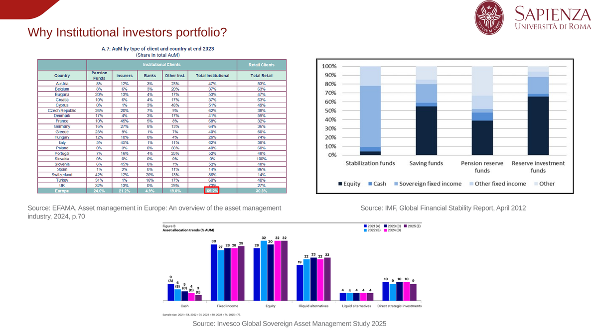
3) Sustainability and regulatory context
Sustainable finance in Europe is strongly shaped by an evolving regulatory framework aimed at redirecting capital flows toward environmentally and socially sustainable activities. Key milestones include the Kyoto Protocol and the Paris Agreement, which established international climate commitments, followed by the European Union’s Action Plan on Sustainable Finance. A crucial step in this process is the introduction of the Sustainable Finance Disclosure Regulation (SFDR, Regulation 852/2020), which enhanced transparency requirements and standardized sustainability-related disclosures for financial products. More recently, the Corporate Sustainability Reporting Directive (CSRD) has further expanded reporting obligations. These regulatory developments directly affect portfolio construction and product classification, as asset managers must align investment strategies with taxonomy criteria and disclosure standards. As a result, labels such as “green” are no longer purely voluntary marketing tools, but are embedded in a formal regulatory structure that influences both investor behavior and portfolio design.
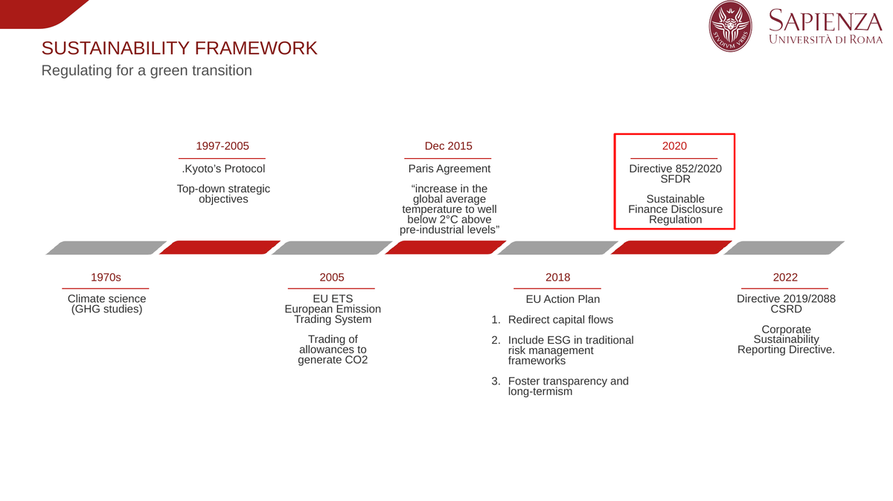
4) Instruments used: Green Bonds and ETFs
Green Bonds: why they matter
Green bonds are fixed-income instruments whose proceeds are earmarked for financing environmentally beneficial projects, such as renewable energy, energy efficiency, and sustainable infrastructure. From an investment perspective, green bonds share many financial characteristics with conventional bonds, while introducing additional features related to transparency, reporting, and use-of-proceeds constraints. The academic literature highlights several key aspects: their typically long time horizon, which aligns well with transition financing needs; enhanced disclosure requirements, which may reduce information asymmetries; and the possible existence of a “greenium,” where investors accept slightly lower yields in exchange for environmental impact or reputational benefits. These characteristics make green bonds a relevant case for assessing whether sustainability-oriented instruments alter the traditional risk–return trade-off faced by institutional investors.
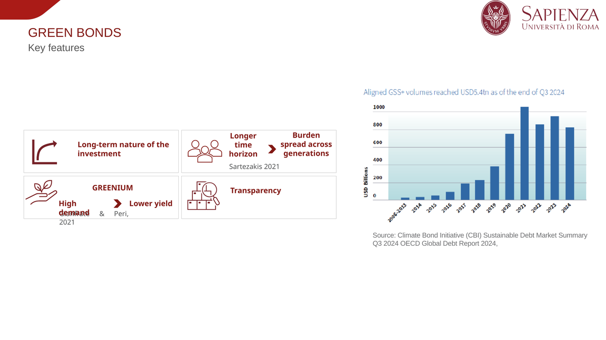
Why ETFs?
To ensure diversification, transparency, and replicability, this study relies on UCITS-compliant Exchange-Traded Funds (ETFs) as portfolio building blocks. ETFs offer daily liquidity, a clear creation and redemption mechanism, and broad market exposure at relatively low cost. From a methodological standpoint, ETFs allow for a clean comparison between green bond exposure and conventional corporate bond exposure, minimizing idiosyncratic issuer risk. Their standardized structure also makes the analysis more reproducible and closer to how institutional investors increasingly implement strategic asset allocation in practice.
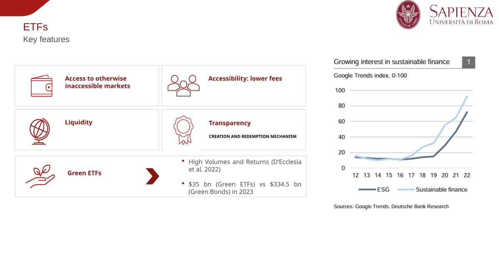
5) Risk metrics: what I measure and why
I evaluate performance and resilience using:
- Sharpe Ratio: excess return per unit of volatility (classic risk-adjusted performance).
- VaR (95%): loss threshold not expected to be exceeded in 95% of cases (downside risk proxy).
- CVaR (Expected Shortfall, 95%): average loss in the worst tail (extreme-loss resilience proxy).
Portfolio performance and resilience are evaluated using a combination of traditional risk-adjusted and downside risk measures. The Sharpe Ratio is employed to capture excess return per unit of total volatility and represents the standard benchmark for risk-adjusted performance in portfolio theory. However, volatility alone may not fully capture investors’ concerns, especially during periods of market stress. For this reason, the analysis also incorporates Value at Risk (VaR) at the 95% confidence level, which estimates the maximum expected loss under normal market conditions, and Conditional Value at Risk (CVaR), or Expected Shortfall, which measures the average loss in the worst tail of the return distribution. Together, these metrics provide a more comprehensive view of both profitability and downside risk, allowing for a nuanced comparison between green and conventional bond portfolios.
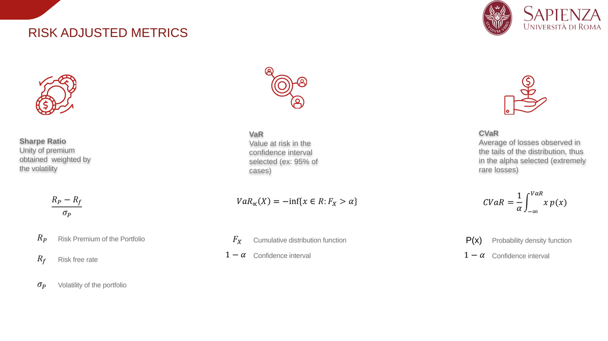
6) Portfolio design and dataset
The analysis focuses on the European market over July 2021 to July 2025, driven by data availability
for the GB ETF used. Daily prices were downloaded from Yahoo Finance and transformed into daily arithmetic returns,
followed by data cleaning that resulted in 1,043 observations. The risk-free rate is taken from
the Kenneth French library to compute excess returns where needed.
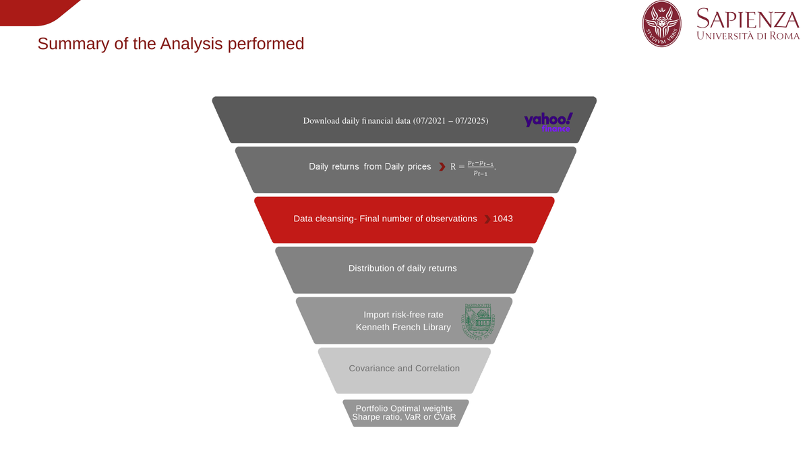
ETFs selected (building blocks)
The two portfolios are built with the same “asset-class logic” to keep the comparison fair:
equity exposure, a bond sleeve (green vs corporate), plus a real estate sleeve as an alternative asset proxy.
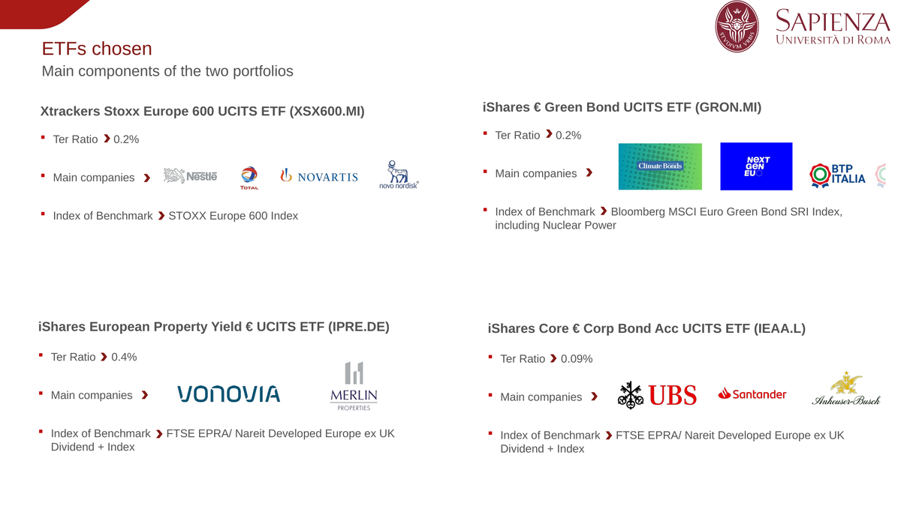
7) First look at the data: distribution and diversification
Return distributions
An initial exploration of the data reveals that daily return distributions exhibit non-normal characteristics, including excess kurtosis and skewness. This leptokurtic behavior implies a higher probability of extreme outcomes than predicted by a normal distribution, reinforcing the importance of using downside and tail-risk measures alongside traditional volatility-based metrics.
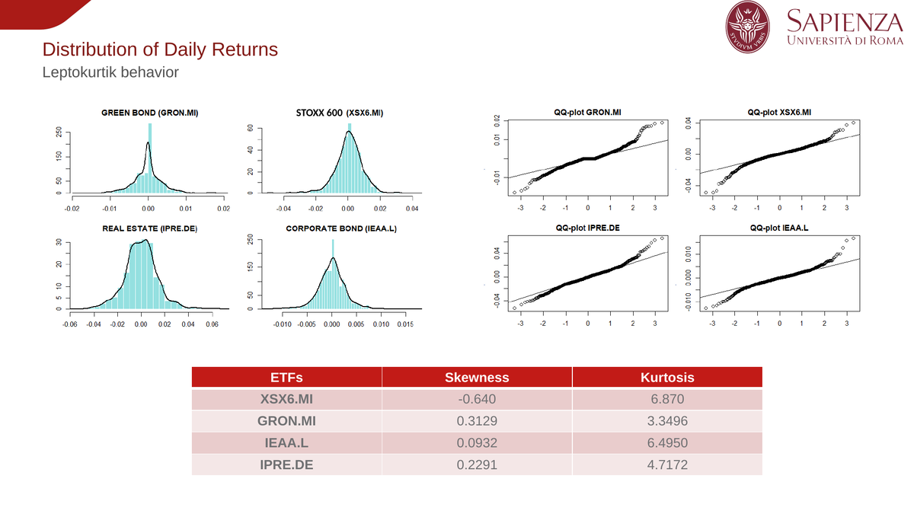
Correlation structure
Diversification is a key channel through which green bonds can add value. In the sample, the green bond ETF shows
lower correlation with equity than the corporate bond ETF, supporting the idea that green bonds may provide
diversification benefits—though whether this translates into higher performance depends on the market regime.
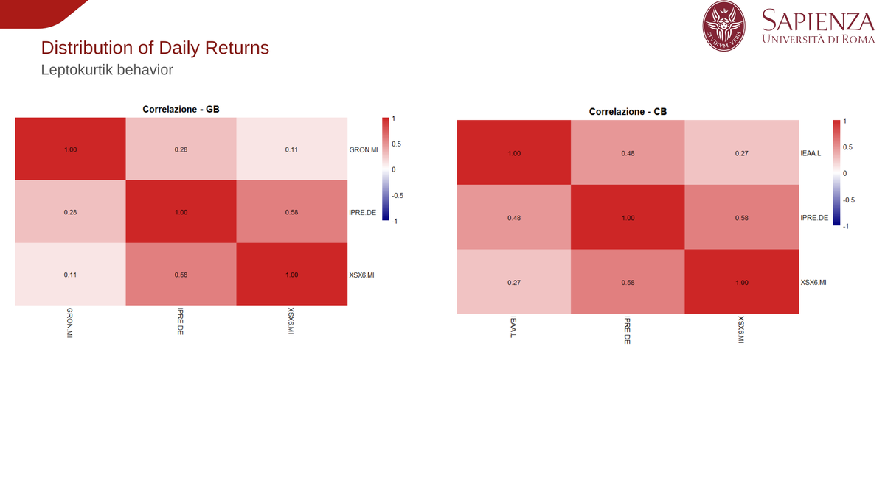
8) Optimization strategies and results
8.1 Sharpe Ratio optimization (profitability lens)
The first optimization strategy maximizes the Sharpe Ratio under realistic constraints, namely short-selling and no leverage, with portfolio weights summing to one. To explore portfolio dynamics and robustness, a monthly re-optimization strategy is also implemented. Although this approach ignores transaction costs and is therefore not directly implementable, it serves as a stress test for the optimizer’s behavior. Results indicate that, under monthly re-optimization, the green bond portfolio achieves a higher Sharpe Ratio over the analyzed period. However, higher risk-adjusted performance does not necessarily correspond to higher cumulative returns, particularly given the destabilizing impact of the 2022 fixed-income market shock.
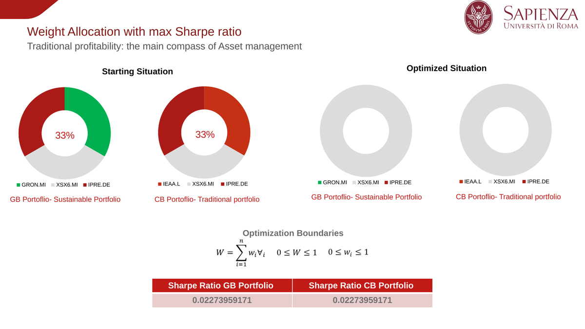
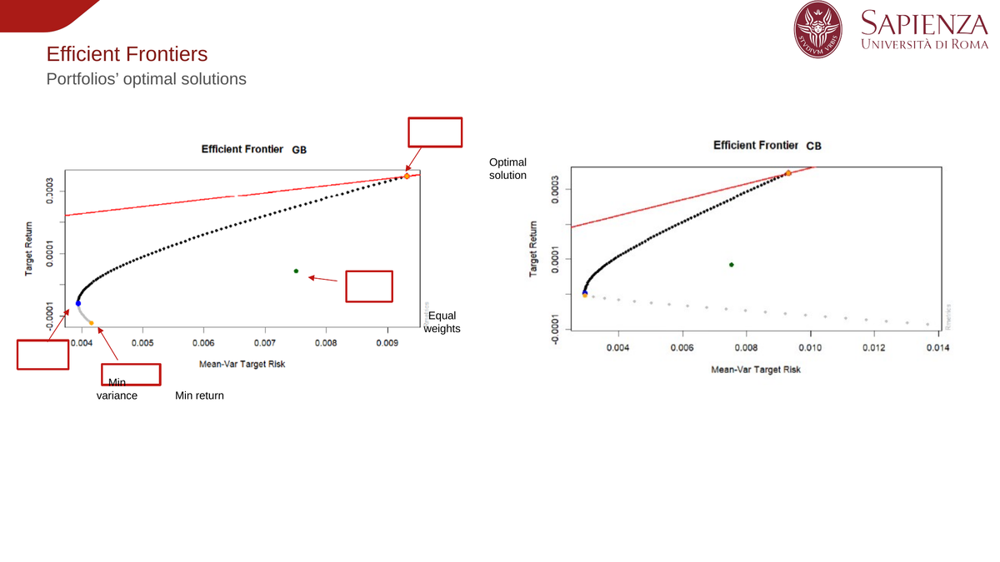
Under monthly re-optimization, the GB portfolio achieves a higher Sharpe in the period analyzed, but the relationship
between Sharpe and cumulative return is not one-to-one. The 2022 regime is destabilizing for fixed income and creates
persistent effects (no clean recovery to pre-2022 levels within the window).
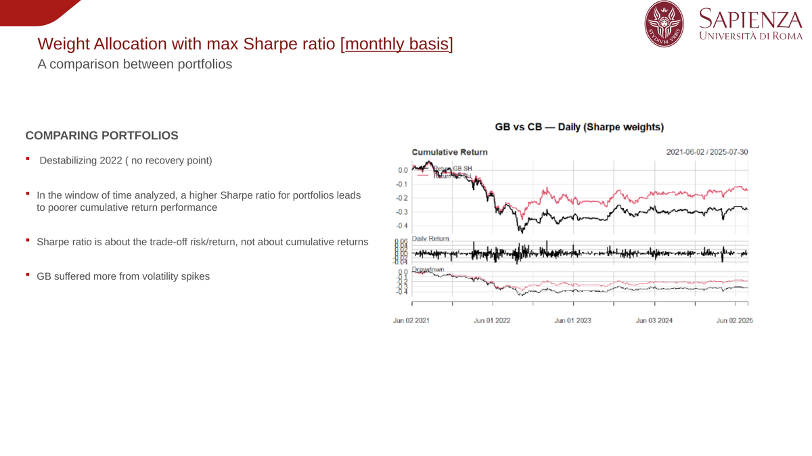
8.2 VaR minimization (downside-risk lens)
The second strategy focuses on minimizing Value at Risk. Both constant-weight and monthly re-optimized portfolios are considered. The objective is to assess whether the inclusion of green bonds alters the downside risk profile of the portfolio. In the constant-weight case, the corporate bond portfolio tends to exhibit more stable cumulative performance. Under monthly re-optimization, however, the green bond portfolio can outperform in cumulative terms, especially when diversification effects and increased equity exposure are favored by the optimizer.
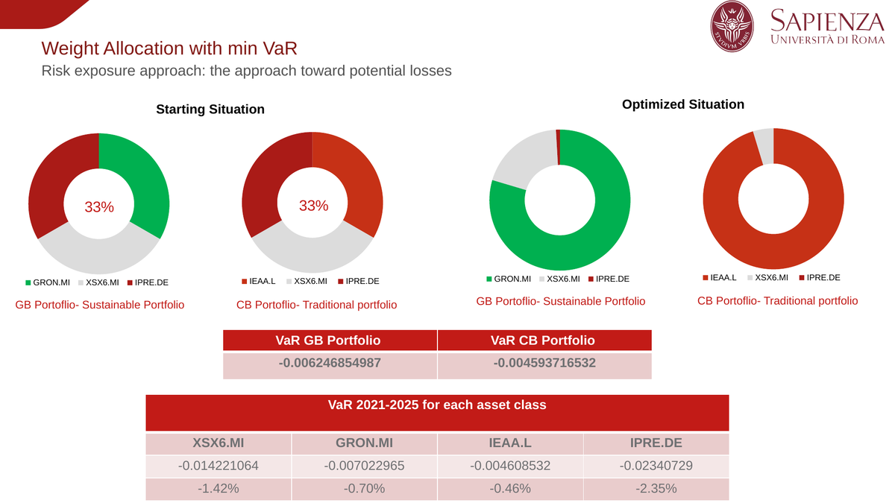
In the constant-weight version, the CB portfolio tends to deliver more stable cumulative returns. Under monthly
re-optimization, the GB portfolio can outperform in cumulative terms, largely when the optimizer increases the equity
sleeve presence and benefits from diversification effects.
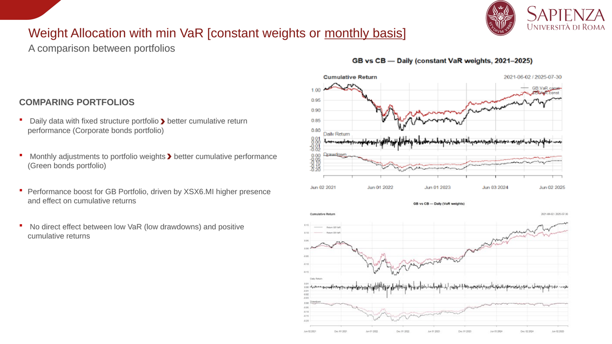
8.3 CVaR minimization (tail-risk / resilience lens)
Finally, I minimize CVaR (Expected Shortfall), focusing on extreme-loss behavior. In the sample window,
the CB portfolio shows slightly stronger tail-loss resilience, while the GB portfolio experiences more fluctuations and
drawdowns—again with 2022 as the main structural break in the time series.
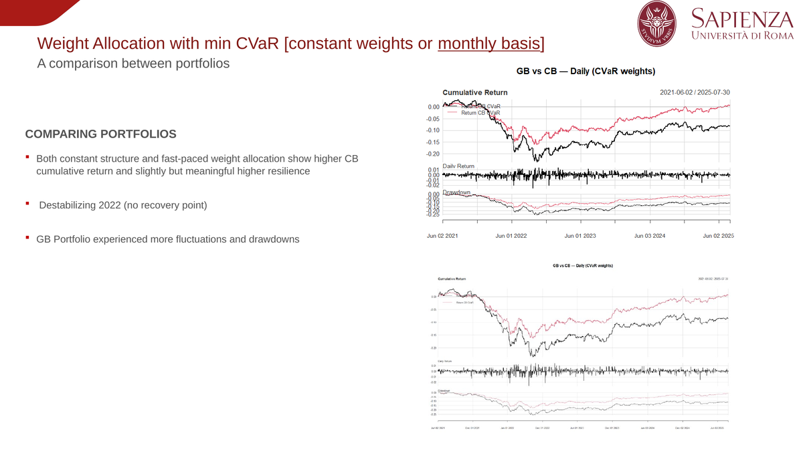
9) Key takeaways
Across strategies, results are not “black or white”. Overall, the results suggest that the comparison between green and conventional bonds is not binary. Green bonds tend to behave similarly to corporate bonds in terms of headline performance, but they may offer diversification benefits that can be valuable in specific portfolio configurations. Monthly re-optimization can improve the Sharpe Ratio of green bond portfolios, although this does not automatically translate into superior cumulative returns. Downside risk results are mixed, with corporate bonds showing slightly stronger tail resilience in the analyzed period. Importantly, from a sustainability perspective, green bonds also deliver non-monetary benefits by directly financing the transition to a low-carbon economy, making them attractive even when financial performance is broadly comparable. green bonds behave similarly to conventional corporate bond exposure
in terms of headline performance, but they can improve diversification (not always enough to dominate performance in the
specific market window).
- With monthly re-optimization, the GB portfolio can deliver a higher Sharpe ratio, but this does not automatically
translate into higher cumulative returns.
- The 2022 fixed-income shock is a structural feature of the sample window and materially affects outcomes.
- On VaR, monthly re-optimization can sometimes favor GB in cumulative returns, helped by diversification and equity exposure.
- On CVaR, CB appears slightly more resilient in the tails in the period analyzed, while GB shows more drawdowns.
- From a sustainability perspective, green bonds can provide “non-monetary returns” by directly funding the transition,
even when financial performance is broadly comparable.
10) Limitations and next steps
- Transaction costs are not modeled (important for monthly rebalancing feasibility).
- ETF-based proxy: ETFs are efficient building blocks, but a deeper institutional replication could
use actual institutional policy weights or holdings.
- Sample window constraint due to ETF listing date (limits longer-horizon inference).
- Future extensions: alternative universes, longer samples, stress tests, and additional downside metrics.
View GitHub Repository